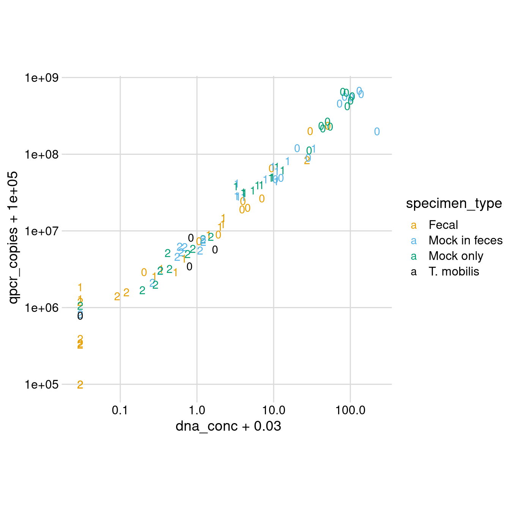
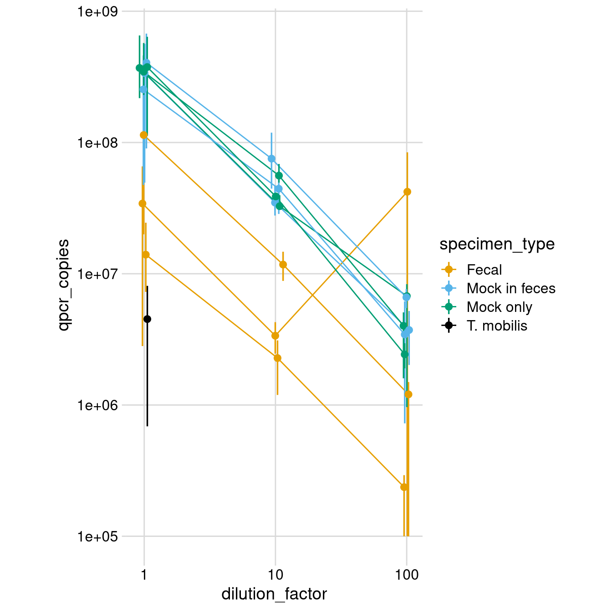
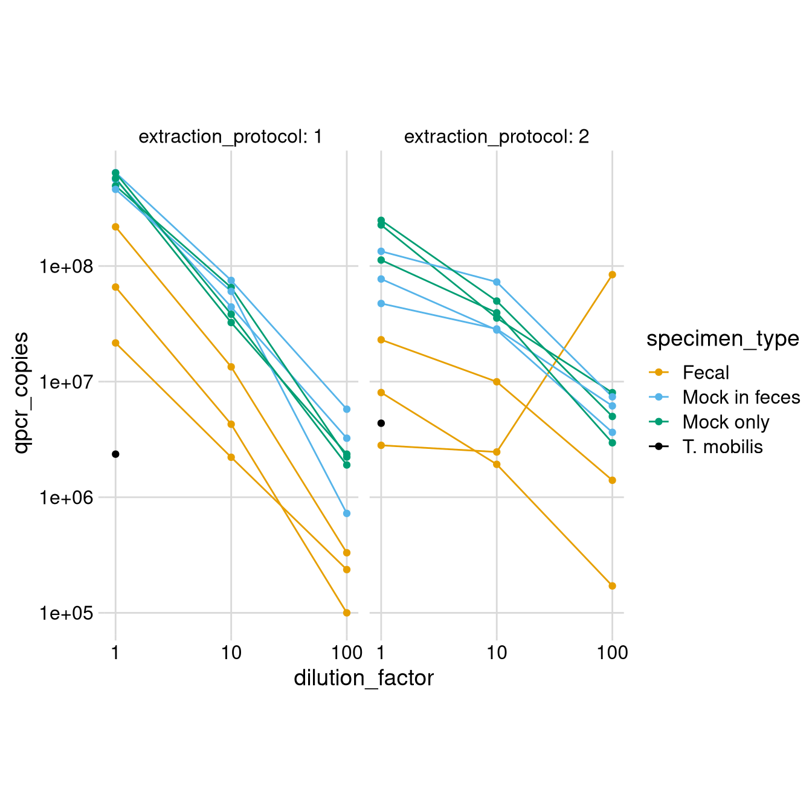

#> ── Attaching packages ─────────────────────────────────────────── tidyverse 1.3.1 ──
#> ✔ ggplot2 3.3.5 ✔ purrr 0.3.4
#> ✔ tibble 3.1.3 ✔ dplyr 1.0.7
#> ✔ tidyr 1.1.3 ✔ stringr 1.4.0
#> ✔ readr 2.0.0 ✔ forcats 0.5.1
#> ── Conflicts ────────────────────────────────────────────── tidyverse_conflicts() ──
#> ✖ dplyr::filter() masks stats::filter()
#> ✖ dplyr::lag() masks stats::lag()#> here() starts at /home/michael/research/vivo-vitro#>
#> Attaching package: 'patchwork'
#> The following object is masked from 'package:cowplot':
#>
#> align_plotstheme_set(theme_cowplot())
import::from(colorblindr, scale_color_OkabeIto, scale_fill_OkabeIto)
Note, to successfully install tabulizer I needed to switch from OpenJDK 8 to OpenJDK 11.
sam <- here('data/2021/', 'sample-data', 'dna-sample-data.csv') %>%
read_csv
#> Rows: 94 Columns: 14
#> ── Column specification ────────────────────────────────────────────────────────────
#> Delimiter: ","
#> chr (8): row, well, dna_sample_id, specimen_name, mixture, specime...
#> dbl (5): column, dilution_power, dilution_factor, aliquot_number, ...
#> lgl (1): feces_added
#>
#> ℹ Use `spec()` to retrieve the full column specification for this data.
#> ℹ Specify the column types or set `show_col_types = FALSE` to quiet this message.These were provided as tables in pdf files. Let’s try to use the R package tabulizer to read these tables into R.
pcg <- here('data/2021/s1',
c('NCSUMclaren_Plate_0002 PicoGreen QC.pdf',
'NCSUMclaren_Plate_0003 PicoGreen QC.pdf'
)
) %>%
map(tabulizer::extract_tables, output = 'data.frame') %>%
map(1) %>%
map(as_tibble) %>%
bind_rows(.id = 'plate') %>%
janitor::clean_names()
pcg %>%
filter(sample_id == 'Empty') %>%
count(concentration_ng_ul)
#> # A tibble: 1 × 2
#> concentration_ng_ul n
#> <chr> <int>
#> 1 Undetected 98pcg %>% filter(sample_id == '')
#> # A tibble: 4 × 5
#> plate sample_id well concentration_ng_ul comments
#> <chr> <chr> <chr> <chr> <chr>
#> 1 1 "" "" "" ""
#> 2 1 "" "" "" ""
#> 3 2 "" "" "" ""
#> 4 2 "" "" "" ""pcg1 <- pcg %>%
filter(!(sample_id %in% c('Empty', ''))) %>%
rename(
dna_sample_id = sample_id,
dna_conc = concentration_ng_ul,
well3 = well,
) %>%
mutate(
dna_conc = case_when(
dna_conc == 'Undetected' ~ '0',
TRUE ~ dna_conc
),
across(dna_conc, as.numeric),
across(dna_sample_id, str_replace_all, '_', '-')
)
qpcr <- here('data/2021/s1',
c('NCSUMcLaren_Plate_0002_AbsQuant.csv',
'NCSUMcLaren_Plate_0003_AbsQuant.csv')) %>%
map(read_csv) %>%
bind_rows(.id = 'plate') %>%
janitor::clean_names()
#> Rows: 96 Columns: 5
#> ── Column specification ────────────────────────────────────────────────────────────
#> Delimiter: ","
#> chr (2): SampleWellThreeCharacter, SampleID
#> dbl (3): fkPLATE_ID, cCopies, cCV
#>
#> ℹ Use `spec()` to retrieve the full column specification for this data.
#> ℹ Specify the column types or set `show_col_types = FALSE` to quiet this message.
#> Rows: 96 Columns: 5
#> ── Column specification ────────────────────────────────────────────────────────────
#> Delimiter: ","
#> chr (2): SampleWellThreeCharacter, SampleID
#> dbl (3): fkPLATE_ID, cCopies, cCV
#>
#> ℹ Use `spec()` to retrieve the full column specification for this data.
#> ℹ Specify the column types or set `show_col_types = FALSE` to quiet this message.qpcr %>%
count(plate, fk_plate_id)
#> # A tibble: 2 × 3
#> plate fk_plate_id n
#> <chr> <dbl> <int>
#> 1 1 1 96
#> 2 2 1 96#> # A tibble: 3 × 6
#> plate fk_plate_id sample_well_three_charac… sample_id c_copies c_cv
#> <chr> <dbl> <chr> <chr> <dbl> <dbl>
#> 1 1 1 C10 F2_D2_1 NA NA
#> 2 1 1 D08 F3_D2_1 NA NA
#> 3 2 1 E02 F1_D2_2 NA NAThese three samples have no qPCR measurements; these are all high-dilution fecal samples. My guess is that the 16s CN was below detection limit, or otherwise the qPCR failed due to low CN. Confirm with Eric, and ask if he has any info on what the detection limit is.
Should ask exactly what the ‘c_copies’ and ‘c_cv’ files are; cv is presumably coefficient of variation - is this the standard error in ‘c_copies’ divided by ‘c_copies’? I think that the estimated copies are per a specific volume - should check which, which I think came up in the email thread.
todo: do more checks, such as that the right samples are in the right plates
overview <- here('data/2021/s1', 'sample_overview.txt') %>%
read_tsv %>%
janitor::clean_names()
#> Rows: 89 Columns: 7
#> ── Column specification ────────────────────────────────────────────────────────────
#> Delimiter: "\t"
#> chr (1): Sample_ID
#> dbl (6): Read_Depth, Reads_Mapping, Reads_Genus_Level, Reads_Speci...
#>
#> ℹ Use `spec()` to retrieve the full column specification for this data.
#> ℹ Specify the column types or set `show_col_types = FALSE` to quiet this message.note, only 89 samples; some were not processed in their pipeline due to insufficient reads / quality.
might be better to instead calculate the reads w/ a tool; I think I have some code to do this with the shortread package somewhere.
overview1 <- overview %>%
select(
dna_sample_id = sample_id,
read_depth
) %>%
mutate(
across(dna_sample_id, str_replace_all, '\\.', '-'),
)
sam1 <- sam %>%
left_join(pcg1, by = 'dna_sample_id') %>%
left_join(qpcr1, by = c('plate', 'well3', 'dna_sample_id')) %>%
left_join(overview1, by = 'dna_sample_id')
Compare qPCR and PicoGreen measurements
sam1 %>% count(dilution_power)
#> # A tibble: 3 × 2
#> dilution_power n
#> <dbl> <int>
#> 1 0 34
#> 2 1 30
#> 3 2 30sam1 %>% count(specimen_type)
#> # A tibble: 4 × 2
#> specimen_type n
#> <chr> <int>
#> 1 Fecal 30
#> 2 Mock in feces 30
#> 3 Mock only 30
#> 4 T. mobilis 4sam1 %>%
ggplot(aes(dna_conc + 3e-2, qpcr_copies + 1e5, color = specimen_type,
label = dilution_power)) +
geom_text() +
scale_x_log10() +
scale_y_log10() +
scale_color_OkabeIto(order = c(1:3, 8), use_black = TRUE) +
theme_minimal_grid() +
coord_fixed(clip = 'off')

Good concordance. Note that there are three overplotted samples where no DNA was measured by either method.
Compare qPCR values versus dilution for each specimen. Note - we have replicate aliquots in all cases, so we’ll want to first average over those.
I’ll just use the median; a better job might be to do a weighted geometric mean where we use the CV for the weights (though we have structure because of the two extraction protocols; it might be useful to not combine these actually…)
x <- sam1 %>%
mutate(across(qpcr_copies, pmax, 1e5)) %>%
group_by(specimen_name, specimen_base_id, specimen_type, dilution_factor) %>%
point_interval(qpcr_copies, .width = 1)
x %>%
# add horizontal jitter
mutate(across(dilution_factor, ~ . * 10^rnorm(n(), sd = 0.02))) %>%
ggplot(aes(dilution_factor, qpcr_copies, color = specimen_type)) +
geom_line(aes(group = specimen_base_id)) +
geom_pointinterval(aes(ymin = .lower, ymax = .upper),
point_size = 2, interval_size = 1) +
scale_x_log10() +
scale_y_log10() +
scale_color_OkabeIto(order = c(1:3, 8), use_black = TRUE) +
theme_minimal_grid() +
coord_fixed(clip = 'off')

These results indicate that the DNA yield overall was quite linear in input. Should explore this further, perhaps breaking down by protocol. But looks very promising for the value of qPCR for relative changes in input concentration when the composition (relative abundances) is consistent.
These results also suggest that adding feces had little impact on bacterial extraction yield.
These results also show that we succeeded in our aim of getting the concentration s of the mock and fecal types to overlap; the lowest dilution of the mocks gets below the undiluted fecal samples.
todo - investigate the outlier
Note, these error bars are misleadingly long b/c of how I grouped by extraction protocol.
todo: in this case we should use a geometric mean -
x <- sam1 %>%
mutate(across(qpcr_copies, pmax, 1e5)) %>%
group_by(specimen_name, specimen_base_id, specimen_type, dilution_factor,
extraction_protocol) %>%
point_interval(qpcr_copies, .width = 1, .point = metacal::gm_mean)
x %>%
# add horizontal jitter
# mutate(across(dilution_factor, ~ . * 10^rnorm(n(), sd = 0.02))) %>%
ggplot(aes(dilution_factor, qpcr_copies, color = specimen_type)) +
facet_wrap(~extraction_protocol, labeller = 'label_both') +
geom_line(aes(group = specimen_base_id)) +
geom_point() +
# geom_pointinterval(aes(ymin = .lower, ymax = .upper),
# point_size = 2, interval_size = 1) +
scale_x_log10() +
scale_y_log10() +
scale_color_OkabeIto(order = c(1:3, 8), use_black = TRUE) +
theme_minimal_grid() +
coord_fixed(clip = 'off')

Note, in this case the error bars are a bit distracting b/c we don’t have replicates for many of the points, so I dropped them.
here we can see that extraction protocol 2 shows saturation; while protocol 1 may show a drop off at low biomass; these were perhaps canceling each other out in our earlier plot combining the two.
It is somewhat strange that the couple samples with substantial DNA failed.
sam1 %>%
filter(is.na(read_depth)) %>%
select(dna_sample_id, dilution_power, dna_conc, qpcr_copies, comments)
#> # A tibble: 5 × 5
#> dna_sample_id dilution_power dna_conc qpcr_copies comments
#> <chr> <dbl> <dbl> <dbl> <chr>
#> 1 F1-D0-4 0 1.03 7275245 ""
#> 2 F2-D2-3 2 0 1095264 "Insufficient mat…
#> 3 M2N-D0-2 0 54.5 230381263 ""
#> 4 M3F-D1-2 1 3.25 28543112 ""
#> 5 M3F-D2-2 2 0.564 6164659 "Marginal materia…sam1 %>%
arrange(read_depth) %>%
select(dna_sample_id, read_depth, dna_conc, qpcr_copies, comments) %>%
print(n=30)
#> # A tibble: 94 × 5
#> dna_sample_id read_depth dna_conc qpcr_copies comments
#> <chr> <dbl> <dbl> <dbl> <chr>
#> 1 M1N-D2-3 41586 0 964017 "Insufficient materi…
#> 2 F1-D2-2 48082 0 0 "Insufficient materi…
#> 3 F3-D2-1 77464 0 0 "Insufficient materi…
#> 4 F1-D2-4 161897 0 292137 "Insufficient materi…
#> 5 F1-D2-3 268021 0 230499 "Insufficient materi…
#> 6 F1-D2-1 281202 0 243013 "Insufficient materi…
#> 7 M3F-D2-1 312964 0 724533 "Insufficient materi…
#> 8 T1-D0-1 402541 0 687679 "Insufficient materi…
#> 9 F2-D2-1 556926 0 0 "Insufficient materi…
#> 10 F1-D1-4 603241 0.311 3106346 "Marginal material f…
#> 11 M2F-D0-4 1053907 223. 199563228 ""
#> 12 M1N-D0-4 1113787 41.6 235422296 ""
#> 13 F2-D2-4 1147633 0.061 1314673 "Insufficient materi…
#> 14 F2-D2-2 1452843 0.09 1495039 "Insufficient materi…
#> 15 M2N-D2-1 1719314 0.164 1596785 "Insufficient materi…
#> 16 F1-D1-2 1862742 0 1192657 "Insufficient materi…
#> 17 M1F-D2-3 2172356 0.232 2017477 "Insufficient materi…
#> 18 F3-D0-2 2638823 0.174 2812040 "Insufficient materi…
#> 19 F3-D1-2 2796358 0.249 2462811 "Insufficient materi…
#> 20 F1-D1-3 2904362 0 1753585 "Insufficient materi…
#> 21 M3N-D2-1 3117998 0.257 1901696 "Insufficient materi…
#> 22 M2N-D2-3 3212898 0.408 3107850 "Marginal material f…
#> 23 F1-D1-1 3323622 0.496 2802958 "Marginal material f…
#> 24 M2N-D0-4 3529736 50.4 267735590 ""
#> 25 M1F-D2-1 3721038 0.59 5203004 "Marginal material f…
#> 26 M1F-D2-4 3722293 0.3 2933430 "Insufficient materi…
#> 27 M1F-D0-1 3790770 102. 555483111 ""
#> 28 M1F-D2-2 3817919 0.523 4519188 "Marginal material f…
#> 29 M3N-D1-2 3908574 6.11 39374129 ""
#> 30 M1N-D2-4 4092656 1.17 7744146 ""
#> # … with 64 more rowsAlso interesting just how unrelated read depth seems to be with qpcr copies.
Generally though it makes sense that these are primarily the samples with low concentrations, and it seems like the failure rate in terms of reads below 600K is generally low - its just the three samples F1-D0-4, M2N-D0-2, and M3F-D1-2 that had sufficient DNA (by picogreen) but weren’t successfully sequenced; all others with sufficient DNA got 1M+ reads.
sessioninfo::session_info()
#> ─ Session info ──────────────────────────────────────────────────────────────────
#> setting value
#> version R version 4.1.1 (2021-08-10)
#> os Arch Linux
#> system x86_64, linux-gnu
#> ui X11
#> language (EN)
#> collate en_US.UTF-8
#> ctype en_US.UTF-8
#> tz America/New_York
#> date 2021-10-01
#>
#> ─ Packages ──────────────────────────────────────────────────────────────────────
#> package * version date lib
#> ade4 1.7-17 2021-06-17 [1]
#> ape 5.5 2021-04-25 [1]
#> assertthat 0.2.1 2019-03-21 [1]
#> backports 1.2.1 2020-12-09 [1]
#> Biobase 2.52.0 2021-05-19 [1]
#> BiocGenerics 0.38.0 2021-05-19 [1]
#> biomformat 1.20.0 2021-05-19 [1]
#> Biostrings 2.60.1 2021-06-06 [1]
#> bit 4.0.4 2020-08-04 [1]
#> bit64 4.0.5 2020-08-30 [1]
#> bitops 1.0-7 2021-04-24 [1]
#> broom 0.7.9 2021-07-27 [1]
#> bslib 0.2.5.1 2021-05-18 [1]
#> cellranger 1.1.0 2016-07-27 [1]
#> cli 3.0.1 2021-07-17 [1]
#> cluster 2.1.2 2021-04-17 [2]
#> codetools 0.2-18 2020-11-04 [2]
#> colorblindr 0.1.0 2021-08-27 [1]
#> colorspace 2.0-2 2021-08-11 [1]
#> cowplot * 1.1.1 2021-08-27 [1]
#> crayon 1.4.1 2021-02-08 [1]
#> data.table 1.14.0 2021-02-21 [1]
#> DBI 1.1.1 2021-01-15 [1]
#> dbplyr 2.1.1 2021-04-06 [1]
#> digest 0.6.27 2020-10-24 [1]
#> distill 1.2 2021-01-13 [1]
#> distributional 0.2.2 2021-02-02 [1]
#> downlit 0.2.1 2020-11-04 [1]
#> dplyr * 1.0.7 2021-06-18 [1]
#> ellipsis 0.3.2 2021-04-29 [1]
#> evaluate 0.14 2019-05-28 [1]
#> fansi 0.5.0 2021-05-25 [1]
#> farver 2.1.0 2021-02-28 [1]
#> forcats * 0.5.1 2021-01-27 [1]
#> foreach 1.5.1 2020-10-15 [1]
#> fs * 1.5.0 2020-07-31 [1]
#> generics 0.1.0 2020-10-31 [1]
#> GenomeInfoDb 1.28.1 2021-07-01 [1]
#> GenomeInfoDbData 1.2.6 2021-05-31 [1]
#> ggdist * 3.0.0 2021-07-19 [1]
#> ggplot2 * 3.3.5 2021-06-25 [1]
#> glue 1.4.2 2020-08-27 [1]
#> gtable 0.3.0 2019-03-25 [1]
#> haven 2.4.1 2021-04-23 [1]
#> here * 1.0.1 2020-12-13 [1]
#> highr 0.9 2021-04-16 [1]
#> hms 1.1.0 2021-05-17 [1]
#> htmltools 0.5.1.1 2021-01-22 [1]
#> httr 1.4.2 2020-07-20 [1]
#> igraph 1.2.6 2020-10-06 [1]
#> import 1.2.0 2020-09-24 [1]
#> IRanges 2.26.0 2021-05-19 [1]
#> iterators 1.0.13 2020-10-15 [1]
#> janitor 2.1.0 2021-01-05 [1]
#> jquerylib 0.1.4 2021-04-26 [1]
#> jsonlite 1.7.2 2020-12-09 [1]
#> knitr 1.33 2021-04-24 [1]
#> lattice 0.20-44 2021-05-02 [2]
#> lifecycle 1.0.0 2021-02-15 [1]
#> lubridate 1.7.10 2021-02-26 [1]
#> magrittr 2.0.1 2020-11-17 [1]
#> MASS 7.3-54 2021-05-03 [2]
#> Matrix 1.3-4 2021-06-01 [2]
#> metacal 0.2.0.9005 2021-07-31 [1]
#> mgcv 1.8-36 2021-06-01 [2]
#> modelr 0.1.8 2020-05-19 [1]
#> multtest 2.48.0 2021-05-19 [1]
#> munsell 0.5.0 2018-06-12 [1]
#> nlme 3.1-152 2021-02-04 [2]
#> nvimcom * 0.9-102 2021-08-10 [1]
#> patchwork * 1.1.1 2020-12-17 [1]
#> permute 0.9-5 2019-03-12 [1]
#> phyloseq 1.36.0 2021-05-19 [1]
#> pillar 1.6.2 2021-07-29 [1]
#> pkgconfig 2.0.3 2019-09-22 [1]
#> plyr 1.8.6 2020-03-03 [1]
#> png 0.1-7 2013-12-03 [1]
#> purrr * 0.3.4 2020-04-17 [1]
#> R6 2.5.0 2020-10-28 [1]
#> Rcpp 1.0.7 2021-07-07 [1]
#> RCurl 1.98-1.3 2021-03-16 [1]
#> readr * 2.0.0 2021-07-20 [1]
#> readxl 1.3.1 2019-03-13 [1]
#> reprex 2.0.0 2021-04-02 [1]
#> reshape2 1.4.4 2020-04-09 [1]
#> rhdf5 2.36.0 2021-05-19 [1]
#> rhdf5filters 1.4.0 2021-05-19 [1]
#> Rhdf5lib 1.14.2 2021-07-06 [1]
#> rJava 1.0-5 2021-09-24 [1]
#> rlang 0.4.11 2021-04-30 [1]
#> rmarkdown * 2.9 2021-06-15 [1]
#> rprojroot 2.0.2 2020-11-15 [1]
#> rstudioapi 0.13 2020-11-12 [1]
#> rvest 1.0.1 2021-07-26 [1]
#> S4Vectors 0.30.0 2021-05-19 [1]
#> sass 0.4.0 2021-05-12 [1]
#> scales 1.1.1 2020-05-11 [1]
#> sessioninfo 1.1.1 2018-11-05 [1]
#> snakecase 0.11.0 2019-05-25 [1]
#> stringi 1.7.3 2021-07-16 [1]
#> stringr * 1.4.0 2019-02-10 [1]
#> survival 3.2-11 2021-04-26 [2]
#> tabulizer 0.2.2 2018-06-07 [1]
#> tabulizerjars 1.0.1 2018-05-14 [1]
#> tibble * 3.1.3 2021-07-23 [1]
#> tidyr * 1.1.3 2021-03-03 [1]
#> tidyselect 1.1.1 2021-04-30 [1]
#> tidyverse * 1.3.1 2021-04-15 [1]
#> tzdb 0.1.2 2021-07-20 [1]
#> useful 1.2.6 2018-10-08 [1]
#> utf8 1.2.2 2021-07-24 [1]
#> vctrs 0.3.8 2021-04-29 [1]
#> vegan 2.5-7 2020-11-28 [1]
#> vroom 1.5.3 2021-07-14 [1]
#> withr 2.4.2 2021-04-18 [1]
#> xfun 0.24 2021-06-15 [1]
#> xml2 1.3.2 2020-04-23 [1]
#> XVector 0.32.0 2021-05-19 [1]
#> yaml 2.2.1 2020-02-01 [1]
#> zlibbioc 1.38.0 2021-05-19 [1]
#> source
#> CRAN (R 4.1.0)
#> CRAN (R 4.1.0)
#> CRAN (R 4.0.0)
#> CRAN (R 4.0.3)
#> Bioconductor
#> Bioconductor
#> Bioconductor
#> Bioconductor
#> CRAN (R 4.0.2)
#> CRAN (R 4.0.2)
#> CRAN (R 4.1.0)
#> CRAN (R 4.1.0)
#> CRAN (R 4.1.0)
#> CRAN (R 4.0.0)
#> CRAN (R 4.1.0)
#> CRAN (R 4.1.1)
#> CRAN (R 4.1.1)
#> Github (clauswilke/colorblindr@e6730be)
#> R-Forge (R 4.1.1)
#> Github (wilkelab/cowplot@555c9ae)
#> CRAN (R 4.0.4)
#> CRAN (R 4.0.4)
#> CRAN (R 4.0.4)
#> CRAN (R 4.0.5)
#> CRAN (R 4.0.3)
#> CRAN (R 4.1.0)
#> CRAN (R 4.0.4)
#> CRAN (R 4.0.3)
#> CRAN (R 4.1.0)
#> CRAN (R 4.1.0)
#> CRAN (R 4.0.0)
#> CRAN (R 4.1.0)
#> CRAN (R 4.0.4)
#> CRAN (R 4.0.4)
#> CRAN (R 4.0.3)
#> CRAN (R 4.0.2)
#> CRAN (R 4.0.3)
#> Bioconductor
#> Bioconductor
#> CRAN (R 4.1.0)
#> CRAN (R 4.1.0)
#> CRAN (R 4.0.2)
#> CRAN (R 4.0.0)
#> CRAN (R 4.1.0)
#> CRAN (R 4.0.5)
#> CRAN (R 4.1.0)
#> CRAN (R 4.1.0)
#> CRAN (R 4.0.3)
#> CRAN (R 4.0.2)
#> CRAN (R 4.0.3)
#> CRAN (R 4.0.2)
#> Bioconductor
#> CRAN (R 4.0.3)
#> CRAN (R 4.0.4)
#> CRAN (R 4.1.0)
#> CRAN (R 4.0.3)
#> CRAN (R 4.1.0)
#> CRAN (R 4.1.1)
#> CRAN (R 4.0.4)
#> CRAN (R 4.0.4)
#> CRAN (R 4.0.3)
#> CRAN (R 4.1.1)
#> CRAN (R 4.1.1)
#> Github (mikemc/metacal@0d54dbf)
#> CRAN (R 4.1.1)
#> CRAN (R 4.0.0)
#> Bioconductor
#> CRAN (R 4.0.0)
#> CRAN (R 4.1.1)
#> local
#> CRAN (R 4.0.3)
#> CRAN (R 4.0.0)
#> Bioconductor
#> CRAN (R 4.1.0)
#> CRAN (R 4.0.0)
#> CRAN (R 4.0.0)
#> CRAN (R 4.0.0)
#> CRAN (R 4.0.0)
#> CRAN (R 4.0.3)
#> CRAN (R 4.1.0)
#> CRAN (R 4.0.5)
#> CRAN (R 4.1.0)
#> CRAN (R 4.0.0)
#> CRAN (R 4.0.5)
#> CRAN (R 4.0.0)
#> Bioconductor
#> Bioconductor
#> Bioconductor
#> CRAN (R 4.1.1)
#> CRAN (R 4.1.0)
#> CRAN (R 4.1.0)
#> CRAN (R 4.0.3)
#> CRAN (R 4.0.3)
#> CRAN (R 4.1.0)
#> Bioconductor
#> CRAN (R 4.1.0)
#> CRAN (R 4.0.0)
#> CRAN (R 4.0.0)
#> CRAN (R 4.0.0)
#> CRAN (R 4.1.0)
#> CRAN (R 4.0.0)
#> CRAN (R 4.1.1)
#> CRAN (R 4.1.1)
#> CRAN (R 4.1.1)
#> CRAN (R 4.1.0)
#> CRAN (R 4.0.4)
#> CRAN (R 4.1.0)
#> CRAN (R 4.1.0)
#> CRAN (R 4.1.0)
#> CRAN (R 4.0.0)
#> CRAN (R 4.1.0)
#> CRAN (R 4.1.0)
#> CRAN (R 4.0.3)
#> CRAN (R 4.1.0)
#> CRAN (R 4.0.5)
#> CRAN (R 4.1.0)
#> CRAN (R 4.0.0)
#> Bioconductor
#> CRAN (R 4.0.0)
#> Bioconductor
#>
#> [1] /home/michael/.local/lib/R/library
#> [2] /usr/lib/R/library